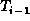

Data Structures and Algorithms
with Object-Oriented Design Patterns in Java
Data Structures and Algorithms
with Object-Oriented Design Patterns in Java
The algorithm for removing items from an M-way search tree
follows directly from the algorithm for removing items from
a binary search tree given in Section  .
The basic idea is that the item to be deleted is pushed down the tree
from its initial position to a node from which it can be easily deleted.
Clearly, items are easily deleted from leaf nodes.
In addition, consider an internal node of an M-way search tree of the form
.
The basic idea is that the item to be deleted is pushed down the tree
from its initial position to a node from which it can be easily deleted.
Clearly, items are easily deleted from leaf nodes.
In addition, consider an internal node of an M-way search tree of the form
If both  and  are empty trees,
then the key
are empty trees,
then the key  can be deleted from T
by removing both
can be deleted from T
by removing both  and
and  , say.
If is non-empty,
, say.
If is non-empty,  can be pushed down the tree by
swapping it with the largest key in ;
and if
can be pushed down the tree by
swapping it with the largest key in ;
and if  is non-empty,
is non-empty,  can be pushed down the tree by
swapping it with the smallest key in
can be pushed down the tree by
swapping it with the smallest key in  .
.
Program gives the code for the withdraw
method of the MWayTree class.
The general form of the algorithm follows that of the withdraw
method for the BinarySearchTree class (Program ).
Program: MWayTree class withdraw method.
 Copyright © 1998 by Bruno R. Preiss, P.Eng. All rights reserved.
Copyright © 1998 by Bruno R. Preiss, P.Eng. All rights reserved.